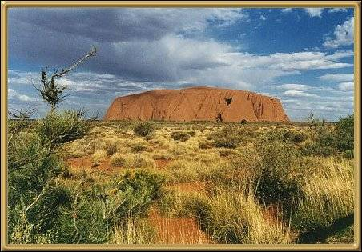

Photographer: Unknown
Ayers Rock, or more properly, Uluru, is an amazing place. Approaching it is an incredible sight, and standing next to it is awe-inspiring. There is a tremendous amount of Aboriginal Rock Art around the base of the rock, and several unusual formations within the rock itself, such as the Sound Shell (Mutitjulu). Don't attempt the climb to the top unless you are in very good physical health. It is a very steep and strenuous climb, and casualties are not uncommon.